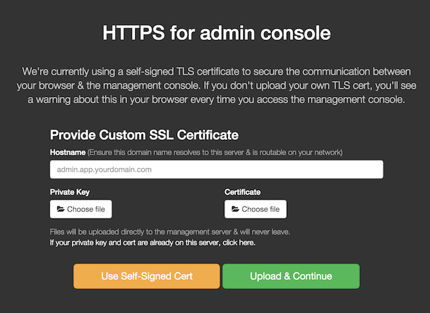
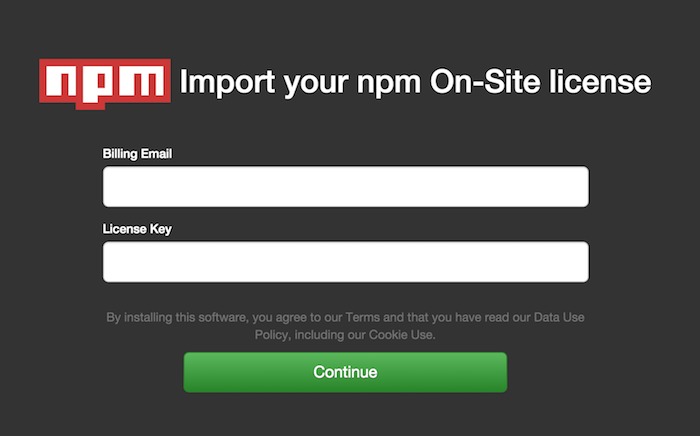
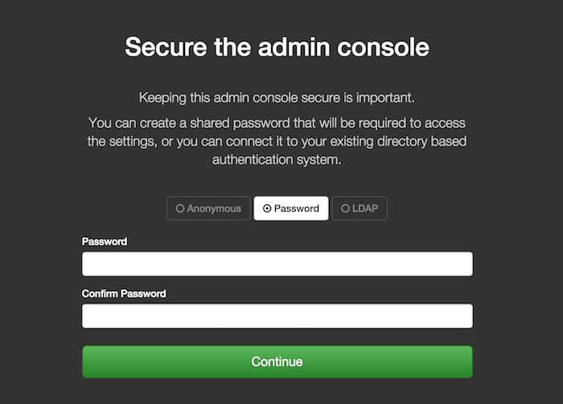
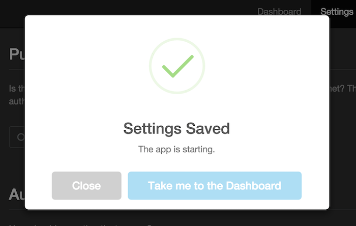
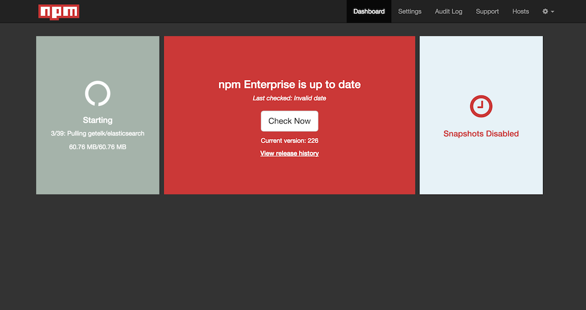
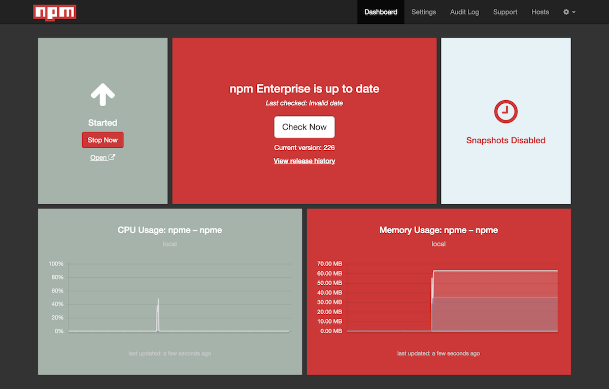

This document is meant to be a comprehensive guide to installing npm On-Site onto your server. When you are done going through the steps, you should have a usable private registry and website.
For details on configuration settings post-installation, please see this page.
Before you get started, please make sure you have the following ready to go:
A Linux server fulfilling the minimal prerequisites
Linux is required to run the container-based appliance. Note that your server will need access to the public internet, either directly or via proxy, in order to download the installer and its dependencies.
Your license key and billing email
If you do not have a license key, please register for one here.
The installation consists of these 4 main steps.
sudo npm install npmo -g --unsafehttps:<your-server>:8800Your npm On-Site instance will then be fully operational!
Follow along for details of each of the 4 main steps.
Node.js and npm are required to run the npmo installer in the next main step.
SSH into your server
OS X and Linux users can use the canonical ssh CLI client. Windows users
can use PuTTY or the ssh
client that comes with
msysGit.
Install a recent version of Node.js based on your Linux distro
The binary distributions provided by our friends at NodeSource make this easy:
$ curl -sL https://deb.nodesource.com/setup_4.x | sudo -E bash -$ sudo apt-get install -y nodejs
If your system does not have curl installed (e.g. Debian 8 Jessie), you
can use wget instead:
$ wget -qO- https://deb.nodesource.com/setup_4.x | sudo -E bash -$ sudo apt-get install -y nodejs
$ curl -sL https://rpm.nodesource.com/setup_4.x | sudo -E bash -$ sudo yum -y install nodejs
Update to the latest version of npm
npm is installed with Node.js, but npm releases updates more frequently than Node.js. It can be easily updated like any other package hosted by the public npm registry:
$ sudo npm install npm@latest -g
npm On-Site is distributed via the npmo package, which acts as an installer
and CLI tool. It will automatically install Docker and an orchestration layer
that comes with its own CLI (replicated) and runs an admin web console on
port 8800 of your server. Once npmo is installed, you will need to complete
the installation by configuring your instance using the admin web console.
Use npm to install npmo:
$ sudo npm install npmo -g --unsafe
Note that the installer may prompt you on whether or not a proxy should be used to access the public internet:
Does this machine require a proxy to access the Internet? (y/N)
Enter y for yes or N for no. If you answer yes, you will be prompted for
the address:
Enter desired HTTP proxy address:
Enter the base URL of your HTTP(S) proxy server, e.g. http://my-proxy:80.
If your system does not have curl installed, you may be prompted to select
a network interface:
The installer was unable to automatically detect the private IP address of this machine.Please choose one of the following network interfaces:[0] default: unspecified[1] lo 127.0.0.1[2] eth0 172.31.43.47Enter desired number (0-2):
Enter the number of the interface with a valid IP, typically named eth or
wlan. This would be 2 in the example above.
Once the installer is complete, make sure that the docker and replicated
daemons are running:
$ sudo ps aux | grep -e docker -e replicatedroot 4354 1.5 1.1 495888 90560 ? Ssl 16:40 6:57 /usr/bin/replicated -droot 4363 0.0 0.1 115824 12924 ? Ssl 16:40 0:11 /usr/bin/replicated-ui -droot 4371 0.0 0.1 107200 7864 ? Ssl 16:40 0:00 /usr/bin/replicated-updater -droot 6512 1.2 0.6 1579584 50292 ? Ssl 16:54 5:28 /usr/bin/docker daemon -H fd://
If any are not up, try running the installer again. On some systems, it's possible that dependencies may not be loaded in the correct order the first time.
Once you have confirmed the daemons are running, there will be an admin web
console listening on port 8800. You can now use it to configure your On-Site
instance and complete the installation.
At this point, the virtual environment and orchestration layer are in place, but the services that make up the registry are not yet installed and running. To complete this phase, you'll first need to set some things up in the admin web console and activate your instance with your license key.
Access the admin web console at https://<your-server>:8800
You will be prompted with a security warning in your browser. This is due to the initial use of a self-signed TLS certificate, which you can replace shortly. Proceed past the security warning to continue.
Enter the DNS name or IP of your server in the "Hostname" field and choose your SSL/TLS option
You can either continue using the self-signed certificate, upload your own certificate and private key, or use a certificate and private key from the file system of your server.

Enter your "Billing Email" and "License Key" and hit "Continue"
When you signed up for a license, the key was displayed on the npm website and sent to the billing email address you provided. This information is needed to validate your license and activate your server instance. Note that a single license will allow you to run multiple instances of npm On-Site.

Secure the admin console as you wish and hit "Continue"
We recommend securing the admin console with a password or with your corporate LDAP, especially if your instance is not running behind a firewall.

Select initial configuration settings for your registry and hit "Save"
For a detailed explanation of all settings, please visit the server configuration page.
On first installation, you should probably focus on "General", "Storage", and "Authentication". The default values for other settings will probably suit your needs.
General
The registry will bind to port 8080 and the website will bind to port
8081 on your server. However, it is typical to put a routing layer or
load balancer in front of your On-Site instance that will use a DNS name
and port of your choosing, possibly terminating SSL/TLS there. The
front-facing URLs you choose for your network topology should be entered
here. Note that these values will be stored with package metadata
and should match the URLs used by end-users to access your npm registry
and website.
You may customize your website by filling in "Your company name".
If your server uses a proxy to access the internet, make sure to enter its address in "Proxy URL".
Storage
Make sure the paths listed here map to the available disk space you have provisioned for your server. This is especially true for the "Package storage path on host", which is where the registry will store the tarballs for all hosted packages.
Authentication
npm On-Site supports several strategies for authentication and authorization, leveraging the credentials and permissions you have already defined in another backing system.
Please see our other docs pages for details on GitHub, Open, and Custom authentication options.
Note that you can always come back to this page and adjust your configuration settings. Each time you save new settings, you will be prompted to restart the registry in order for the changes to take effect.
Hit "Take me to the Dashboard"
The first time you save your settings, the admin console will display a success dialog and will automatically download and start the registry services with your applied configuration.

With configuration settings saved, the admin console will direct you to the Dashboard where you can view the status of the registry services. If the top-left panel does not say "Starting", then hit the "Start Now" button.
Wait for the registry services to start

Once all the containerized registry services have been downloaded and started, the Dashboard will prompt you to reload the page to add panels for resource metrics.
Reload the Dashboard

Your npm On-Site registry is ready to use!
Verify registry and website
Your registry is now available at http://<your-server>:8080
You should get a JSON response from that URL.
And your npm website is available at http://<your-server>:8081
If everything looks good, it's time to configure your npm CLI client and start publishing and installing private packages. Congrats!
Last modified January 19, 2016 Found a typo? Send a pull request!